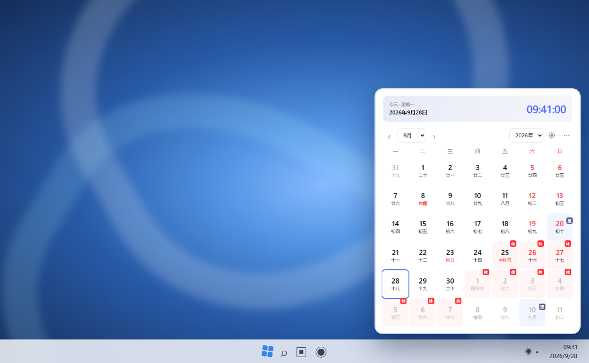
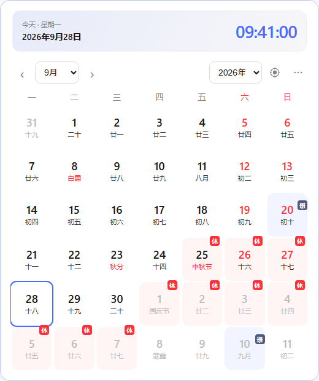
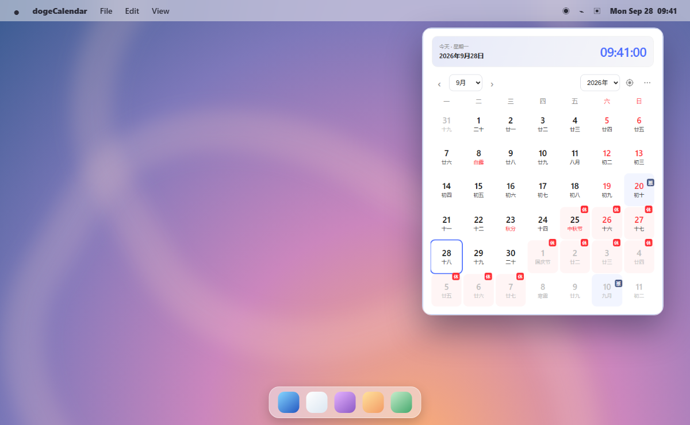

Windows 11

dogeCalendar
282026年9月星期一
八月十八农历
24°多云
上海 · 天气
宜出行 · 会友 · 祈福
忌动土 · 开仓
从任务栏时钟打开日历面板，不打断当前工作；快速查看月历、农历与节假日，右键还能进入设置。
桌面与应用界面合成示意；天气、黄历为示例数据。dogeCalendar 把日历放在顺手的位置。日期、农历、节假日、天气和世界时间，想看时打开，不用时安静待着。
前往 GitHub Releases，选择适合你系统的安装包。

针对不同系统的使用习惯设计入口；月历、农历、天气与世界时间，在两个平台都能使用。

从任务栏时钟打开日历面板，不打断当前工作；快速查看月历、农历与节假日，右键还能进入设置。
桌面与应用界面合成示意；天气、黄历为示例数据。
从菜单栏图标展开日历面板，点按空白处即可收起；可调整菜单栏图标样式，保持桌面整洁。
桌面与应用界面合成示意；天气、黄历为示例数据。从 Windows 任务栏时钟或 macOS 菜单栏打开日历面板。
月历搭配农历、节假日标记与日期详情，安排日子更轻松。
查看实时天气和世界时间，按喜好调整主题与显示方式。